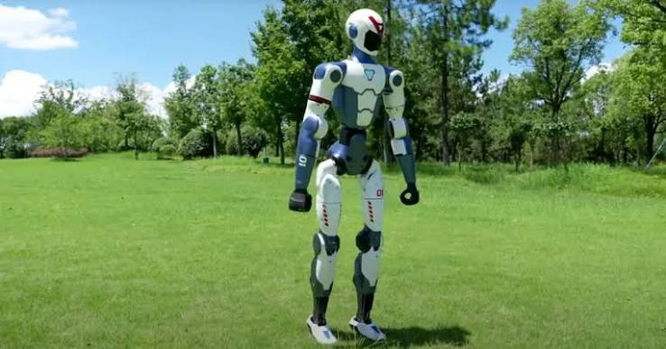
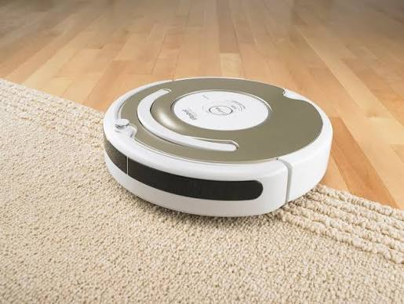
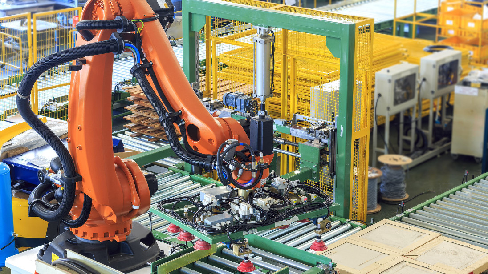

Робот-гуманоїд
Робот-гуманоїд (людиноподібний робот) — це машина, ходова частина якої виконана у вигляді людиноподібного тіла.

Загалом, людиноподібні роботи мають тулуб, голову, дві руки і дві ноги.
Роботи — це автоматизовані пристрої, які допомагають людині виконувати різноманітні завдання. Вони використовуються в побуті, промисловості, медицині та інших сферах життя.
Розглянемо основні види роботів та їхні особливості.
Робот-гуманоїд (людиноподібний робот) — це машина, ходова частина якої виконана у вигляді людиноподібного тіла.

Загалом, людиноподібні роботи мають тулуб, голову, дві руки і дві ноги.
Побутовий робот — робот, призначений для допомоги людині в повсякденному житті.

Відомі наступні моделі побутових роботів:

Сучасні роботи промислового призначення — це рука-маніпулятори, закріплені на основі й призначені для виконання одноманітної роботи, наприклад складання та переміщення.